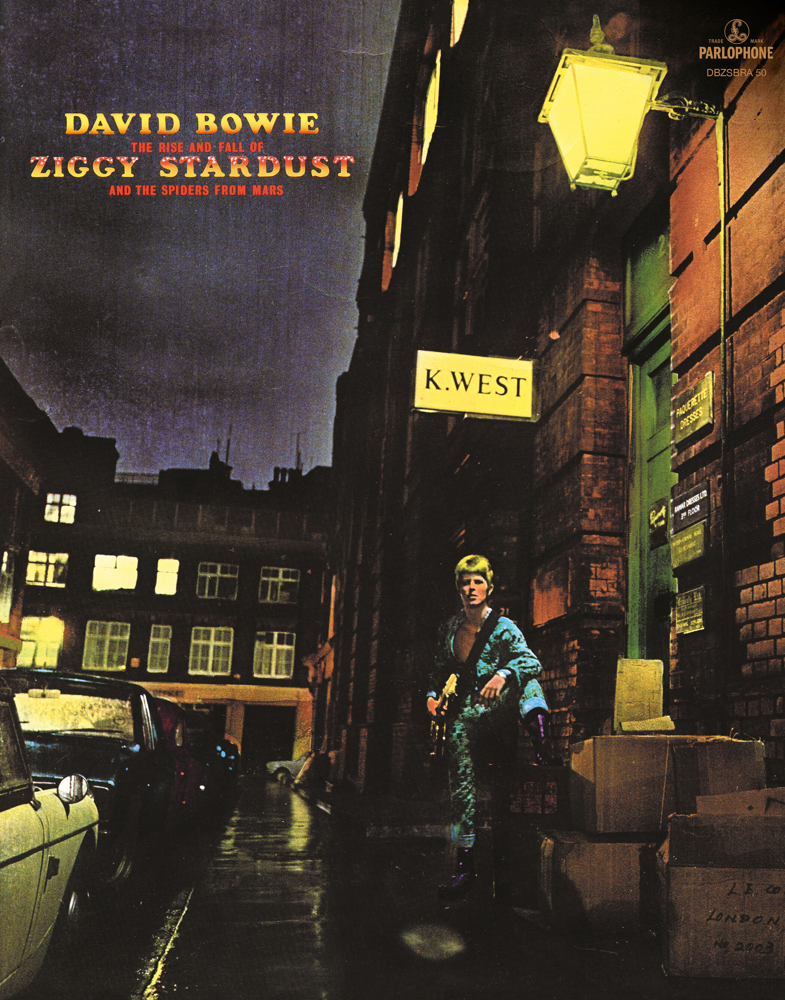

David Bowie- The Rise and Fall of Ziggy Stardust and the Spiders From Mars

Género: Rock
Año: 1972
Total de pistas: 22
Información de Producción
| Campo | Información |
|---|---|
| Año | 1972 |
| Género | Rock |
| Total de pistas | 22 |
Tracklist
1. Five Years [4:43]
1. Five Years [4:48]
2. Soul Love [3:34]
2. Soul Love [3:32]
3. Moonage Daydream [4:40]
3. Moonage Daydream [4:34]
4. Starman [4:14]
4. Starman [4:12]
5. It Ain’t Easy [2:57]
5. It Ain’t Easy [2:54]
6. Lady Stardust [3:21]
6. Lady Stardust [3:19]
7. Star [2:47]
7. Star [2:47]
8. Hang On To Yourself [2:39]
8. Hang On To Yourself [2:28]
9. Ziggy Stardust [3:13]
9. Ziggy Stardust [3:13]
10. Suffragette City [3:25]
10. Suffragette City [3:24]
11. Rock ’n’ Roll Suicide [2:58]
11. Rock ’n’ Roll Suicide [2:58]